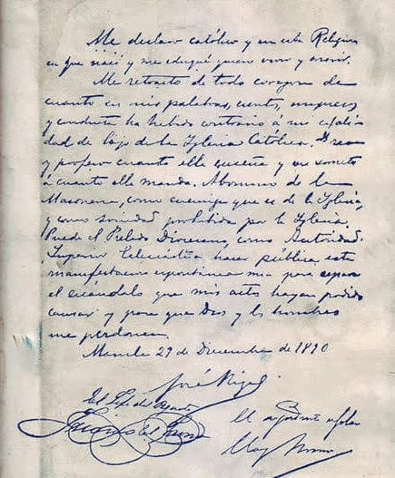

One of José Rizal’s biggest secrets was that he may have taken back his words against the Catholic Church before he died. Just before he was shot in 1896, he is said to have signed a paper saying he still believed in the Church. Some people think he was forced to do it or that the paper was fake. Others believe he really changed his mind. This secret made many people wonder what he truly believed in the end.
✒️ Rizal's Retraction Letter
Me declaro católico y en esta Religión en que nací y me eduqué quiero vivir y morir.
Me retracto de todo corazón de cuanto en mis palabras, escritos, impresos y conducta ha habido contrario a mi cualidad de hijo de la Iglesia Católica. Creo y profeso cuanto ella enseña y me someto a cuanto ella manda. Abomino de la Masonería, como enemiga que es de la Iglesia, y como Sociedad prohibida por la Iglesia. Puede el Prelado Diocesano, como Autoridad Superior Eclesiástica hacer pública esta manifastación espontánea mía para reparar el escándalo que mis actos hayan podido causar y para que Dios y los hombres me perdonen.
Manila 29 de diciembre de 1896.
–José Rizal–
Translation:
I declare myself a Catholic and in this Religion in which I was born and educated I wish to live and die.
I retract with all my heart whatever in my words, writings, publications and conduct has been contrary to my character as son of the Catholic Church. I believe and I confess whatever she teaches and I submit to whatever she demands. I abominate Masonry, as the enemy which is of the Church, and as a Society prohibited by the Church. The Diocesan Prelate may, as the Superior Ecclesiastical Authority, make public this spontaneous manifestation of mine in order to repair the scandal which my acts may have caused and so that God and people may pardon me.
Manila 29 of December of 1896
–José Rizal–